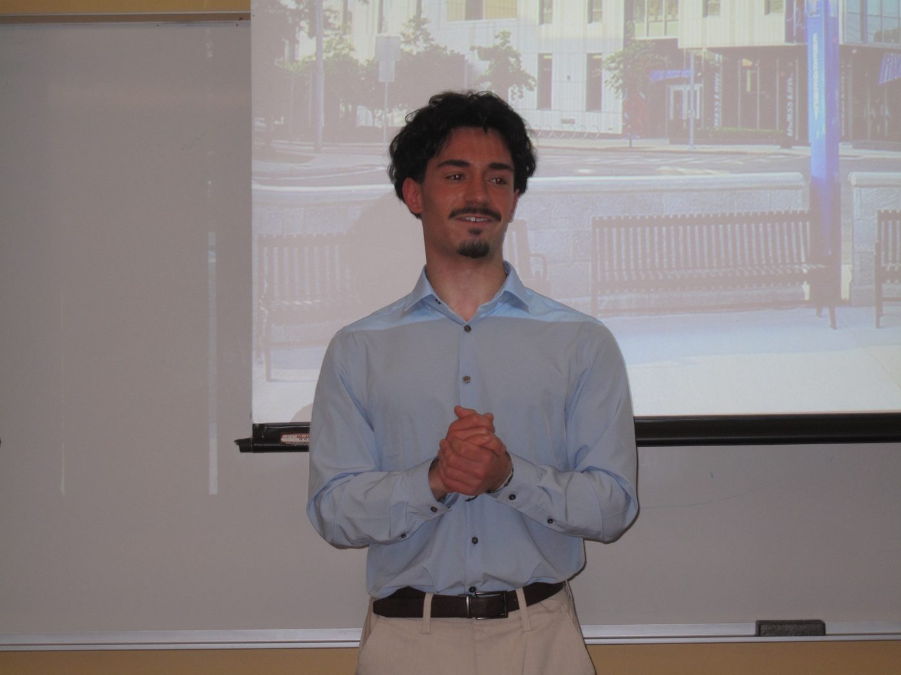
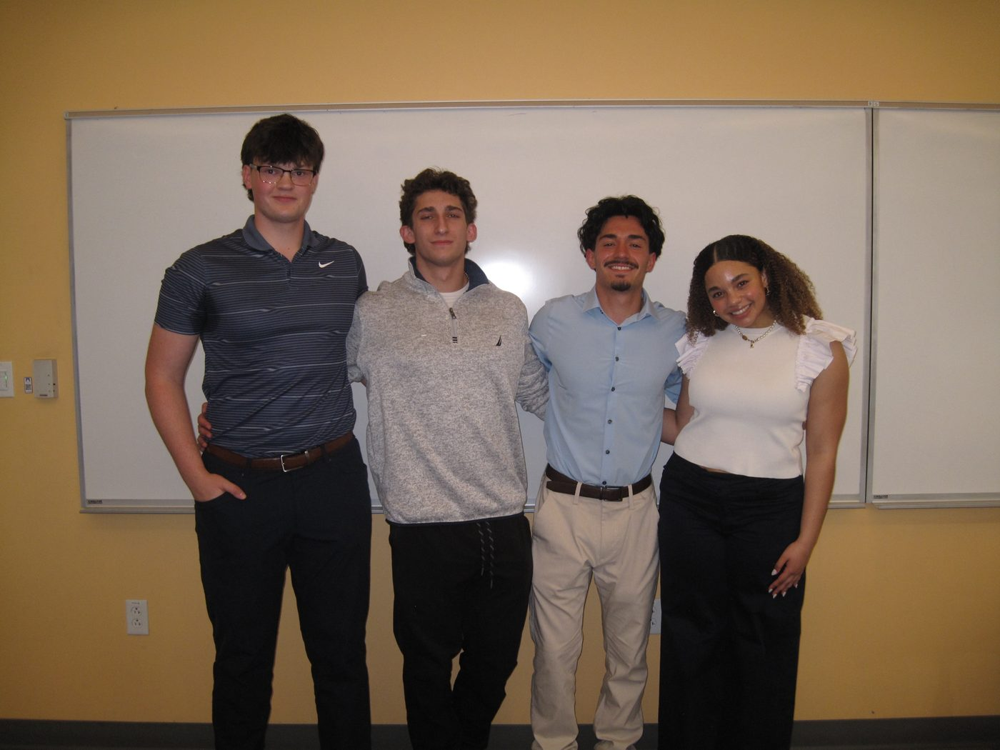

Mill City Consulting.
The client was a six lane duckpin bowling alley that has been open since 1931, with new owners and no financial system.
The question, the method, the finding, and what it means
- The question
- Can two new owners run a 1931 duckpin alley as a business when it has no books, no website and machines older than they are?
- Data and method
- Interviews with the owners, a revenue breakdown by line, and a five section question bank I wrote for the research and due diligence work: the business, operations, customers and market, pain points and goals.
- What I found
- Leagues were about 87 percent of revenue, parties 9 and food and drink 4. The owners had not seen that split before. The main risk was the pinsetting machines and not the market.
- What it means
- In effect this is a subscription business with a single point of failure. The profit and loss tracker gave the owners their first view of it, and the introduction to the engineering department addressed the equipment risk that could close it.
Leagues, parties, and 1960s pinsetters
Two owners had recently bought the business. Leagues were about 87 percent of revenue, parties 9 and food and drink 4. Its strengths were its position as one of the last duckpin houses in the region, owners who do their own repairs and an active Facebook following. Its weaknesses were fragile sixty year old machines, no website and no formal books.
Visibility first
- An Excel financial tracker with a live profit and loss, so the owners could see the business for the first time.
- A QR code payment setup, a website, new signage and a brand story.
- An introduction to the UML engineering department about the pinsetters.
The question bank
My part was research and due diligence. I wrote the five section client question bank the group uses on new engagements: understanding the business, current operations, customers and market, pain points, and goals. I presented it to the next Mill City cohort in September 2026.
Presenting the work

Presenting the research and due diligence template. 
The team after the presentation.